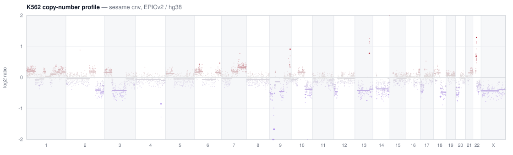

Infinium DNA-methylation analysis as a single C binary — IDAT → betas, QC, differential methylation, copy number, and SNP genotyping. No R, no Bioconductor.
GitHub· README· Numerics & fidelity· arrays: EPIC, EPICv2, HM450, MSA
# conda (recommended) — installs the `sesame` binary; deps zlib + libcurl
conda install -c zhou-lab -c conda-forge sesame-cli
# or build from source (C compiler + make)
git clone --recurse-submodules https://github.com/zwdzwd/sesame-cli
cd sesame-cli && makeDownloads a platform's ordering, mask, and coordinates into a local store, verified against a compiled-in digest. The only command that touches the network.
sesame fetch EPICv2 # ordering + mask + coords for one platform
sesame fetch genome hg38 # genome tiling for CNV (hg38 · mm10 · mm39)Runs QCDPB (openSesame's default) over a cohort in one
process. A <prefix> resolves <prefix>_Grn.idat[.gz]
and _Red. Outputs are YAME .cg files + qc.tsv.
# a whole cohort -> beta.cg / intensity.cg / pval.cg / qc.tsv
sesame preprocess --out out/ $(ls idats/*_Grn.idat.gz | sed 's/_Grn.idat.gz//')
sesame preprocess --output beta --out out/ s1 s2 s3 # just betas
sesame preprocess --prep "" --out raw/ s1 # raw betas (bit-identical to R)Per-probe OLS with t/F tests and BH adjustment (sesame's DML),
matching R's lm to ~1e-9.
sesame dml --betas out/beta.cg --index EPICv2.ordering.tsv.gz \
--meta samples.tsv --formula '~ group + age' > dml.tsvMetadata's first column matches the sample names; categorical terms are
auto-dummied. Use --design <numeric.tsv> for interactions.
Regress total intensity on a normal panel → log2 ratios → genome bins → circular binary segmentation (a deterministic port of DNAcopy's CBS).
# target = raw total intensity, then segment
sesame preprocess --prep "" --raw-signal --output total_intensity --out t/ tumor
sesame cnv --target t/total_intensity.cg --platform EPICv2 > segments.tsv # default
sesame cnv --target t/total_intensity.cg --platform EPICv2 --bins > bins.tsv
sesame cnv output — K562 (EPICv2/hg38): chr9p21 deletion, chr13/22 amplifications. Blue = loss, red = gain.Genotype the array's SNP (rs) probes into a VCF (sesame's
formatVCF); GT and variant fractions are exact vs R.
sesame vcf tumor --platform EPICv2 --snp EPICv2.hg38.snp.tsv.gz > geno.vcf
# --variants: only rs + channel-switching probes (drops the non-switching Inf-I bulk)
sesame vcf tumor --platform EPICv2 --snp EPICv2.hg38.snp.tsv.gz --variants > geno.vcf# label any positional .cg / .cm / coord table with Probe_IDs (greppable TSV)
sesame attach-probe --platform MSA --all MSA.hg38.mask.cm
sesame idat-dump --tsv sample_Grn.idat.gz # raw addr / mean / sd / nbeads
sesame index-info # store location + which platforms are present| command | output |
|---|---|
preprocess | IDAT → beta / intensity / pval / qc (batched, YAME .cg) |
dml | per-probe differential methylation (TSV) |
cnv | copy-number log2 ratios, bins, CBS segments (TSV) |
vcf | SNP genotypes as VCF |
attach-probe | label a positional file with Probe_IDs |
fetch | download platform / genome annotation (verified) |
idat-dump · index-info | inspect a raw IDAT · show the store |